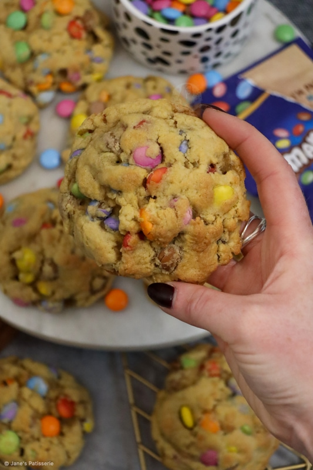

Smartie Cookies

Description
Beautifully soft smartie cookies. These delightful snacks are easy to bake and just as easy to eat!
Increase or decrease the amount of smarties to suit your taste. Personally I would recommend 400g,
but if you have a sweeter tooth then feel free to double this!
Ingredients
- 125g butter
- 175g light brown sugar
- 1 egg
- 1 tsp vanilla
- 300g plain flour
- 1 tbsp cornflour
- 1 + 1/2 tsp baking powder
- 1/2 tsp baking powder
- 1/2 tsp salt
- 400g smarties
Steps
- Beat butter and sugar until creamy
- Add in the remaining ingredeints, but not the smarties. This should form a cookie dough
- Stir in the smarties
- Divide the mixture in to 8 equal cookie balls
- freeze the mixture for half an hour before baking for 13 minutes at 180 degrees fan
- Let the cookies cool for 30 minutes before tucking in!